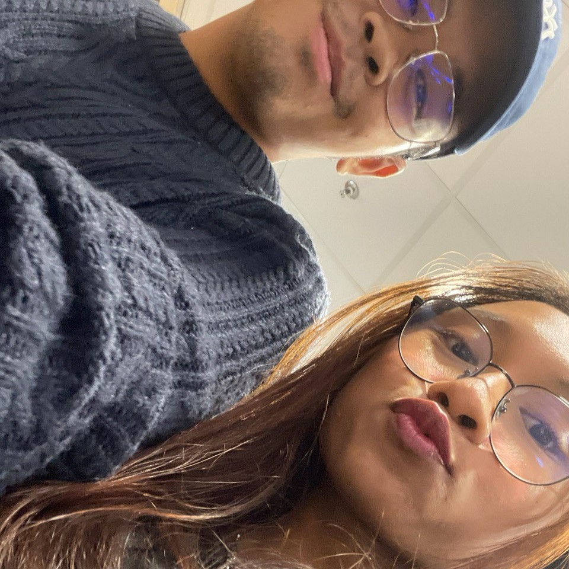

pictures from
Our Journey.



the day where it all started...
You never fail to amaze me
Hi sayang, if you're reading this, it means that the words that you've said a year ago truly has happened. YES, WE MADE IT BABY!!! And I am more than proud and happy to be here today with you by my side. It has been, kind of a ride that was filled with all sorts of feelings and emotions. We've been through so much together, all the good and bad times had its meaning and it has gotten us to where we are today. And you Arissa Hadirah, you are the reason behind my happiest moments. I tried so hard to write this properly, so bear with me if it gets a bit messy, you know how I am. So here's a little bit of something for us to look back on the love that we shared, the memories we created and the dreams we'll chase together. Here's to us, forever and always.
pictures from
Tweleve notes for...
lastly...